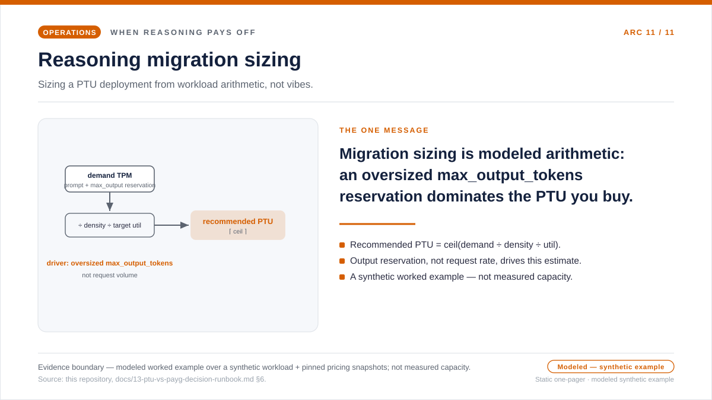
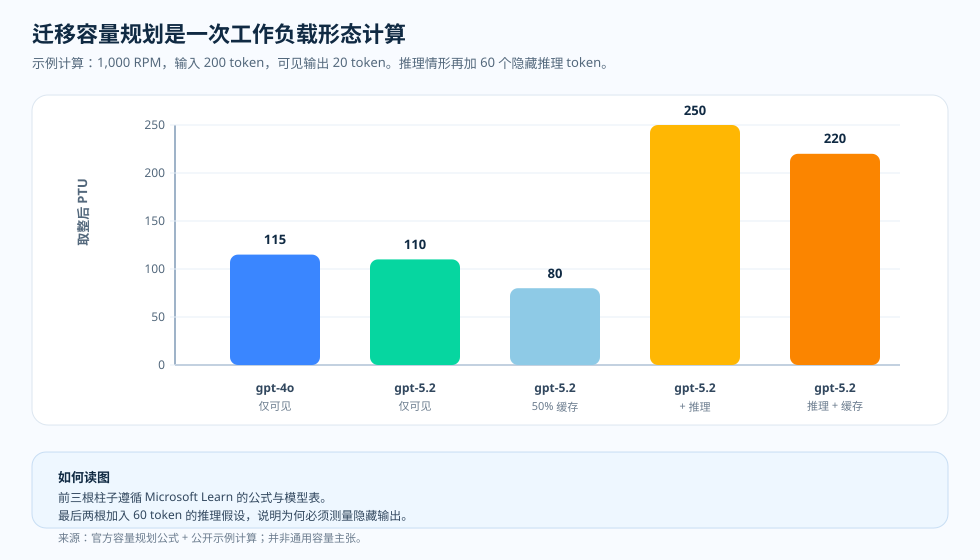

运维随笔 · 从 GPT-4o 到 GPT-5.x 的容量规划
迁到推理模型，不能只凭模型名做容量规划
某个团队计划把 gpt-4o 的流量迁到 GPT-5.x 的推理模型上，需要为新部署算出
PTU 数量。出于本能，人们想复用已经管用的东西：要么把旧 gpt-4o 的 PTU
规模直接搬过来，要么给它套一个家族级的"5.x"乘数。这背后的假设是：模型名携带了足以
做容量规划的信息。但驱动 PTU 容量规划的不是模型名，而是 token 的形态。提示大小、
可见输出、隐藏的推理 token、缓存命中率、响应上限，都会改变结果。所以"只凭名字做
容量规划"的本能，正面撞上本文要问的运维问题：模型名够不够，还是必须先把请求的形态
重新测一遍？
max_output_tokens）在本仓库里被当成一个需要验证的准入风险假设，而不是
有文档记载的平台行为，以确认它会不会主导一个工作负载所预留的 PTU。这张单页概览
传达的就是这一条信息，并如实标明边界：这是一份在建模工作负载上、配着固定价格快照的
合成计算示例，而不是测得的容量。
打开迁移容量规划的单页概览 SVG。

为什么要重新测量，而不是复用旧规模
复用的反射假设模型名携带了规模——只要把管用的 gpt-4o 数值乘上一个家族
乘数，对 GPT-5.x 仍然合身。在接受这个假设之前，值得把两件事并排放一下。第一件是文档
规定的：Microsoft Learn 把流量换算成归一化 TPM，输入是峰值 RPM、平均提示与输出 token、
缓存率、模型的输出对输入比，以及每 PTU 的 Input TPM，并把缓存的提示 token 从利用率里
扣掉。OpenAI 把推理 token 记录为不显示的输出侧 token，报告在
output_tokens_details.reasoning_tokens 里。第二件是本仓库的示例计算：把那条
有文档记载的公式跑在一个调用形态的示例上，并排展示驱动规模的各个因素——它不是对任何
部署的测量。
值得停下来的，正是那个"成对"的部分。只看可见输出，迁移显得很好对付：同样的提示、
同样的可见答案，在新模型上大体同档，甚至可能略微更轻。但可见的答案不是请求的全部。
一旦隐藏的推理输出出现，同样的答案就可能需要多得多的归一化 TPM。而本仓库的工作假设
——这是一个需要验证的准入风险，而不是有文档记载的平台行为——是：过大的
max_output_tokens 上限，无论那些 token 是否真的被生成，都可能预留下准入
权重。所以运维上的问题不是"新模型重不重"，而是"我测得的请求形态，也就是可见输出、推理
输出、缓存率、响应上限，实际预留了什么"。归一化 TPM 公式、逐模型的表、缓存扣减、
推理 token 的记账，是 Microsoft Learn 与 OpenAI 记录的；把过大的
max_output_tokens 当成一个需要验证的 PTU 准入风险，则是本仓库愿意为之背书的
运维推断。下面的图，是一份在建模工作负载上、配着固定价格快照的合成计算示例。它不是测得的
容量，不是在线 PTU 吞吐量，也不是 SLA。下面的示例图把驱动规模的因素明示出来。
问题
在为 PTU 上的 GPT-5.x 给 GPT-4o 工作负载做容量规划之前，应该重新测量什么？
证据
Microsoft Learn 给出归一化 TPM 公式，OpenAI 记录了推理 token 的记账方式。
决策
从实测的 token 形态做容量规划，而不是从"5.x"这种家族级的假设。
官方行为 · 归一化 TPM
容量规划公式看的是 token 形态
Microsoft Learn 通过把流量换算成归一化 TPM 来给 PTU 需求做容量规划。输入是峰值 RPM、 平均提示 token、平均生成输出 token、缓存率、模型的输出对输入比，以及模型每 PTU 的 Input TPM 值。
公式：
normalized_tpm = rpm × (prompt_tokens × (1 - cache_rate) + output_ratio × output_tokens)
raw_ptu = normalized_tpm ÷ input_tpm_per_ptu
正因为有这条公式，家族级的捷径才会误导人。某个模型即便输出比更重，也可能拥有比前一个 模型更高的每 PTU Input TPM。答案取决于你工作负载实际的提示、输出、缓存画像。
运维视角 · 迁移中会变化的因素
四个因素决定迁移是否合身
1. 输出权重
对于 GPT-4.1 及以后，Microsoft Learn 表示输出 token 在利用率里带有模型特有的输入 token 权重。
2. 隐藏的推理
OpenAI 把推理 token 记录为不显示的输出侧 token。请从 output_tokens_details.reasoning_tokens 测量。
3. 缓存率
Microsoft Learn 表示，缓存的提示 token 会从 PTU 利用率里扣除。因此前缀形态的变化会改变容量规划结果。
4. 响应上限
请记录 max_output_tokens。本仓库把过大的上限当成一个需要验证的 PTU 准入风险假设，而不是一个靠猜的值。
示例性计算 · 相同的可见工作负载
隐藏的输出可能改变答案

| 行 | 模型 | 缓存率 | 生成输出假设 | 取整后的 PTU |
|---|---|---|---|---|
| 可见基线 | gpt-4o | 0% | 20 个输出 token | 115 |
| 可见迁移 | gpt-5.2 | 0% | 20 个输出 token | 110 |
| 可见迁移 + 缓存 | gpt-5.2 | 50% | 20 个输出 token | 80 |
| 推理迁移 | gpt-5.2 | 0% | 20 可见 + 60 推理 token | 250 |
| 推理迁移 + 缓存 | gpt-5.2 | 50% | 20 可见 + 60 推理 token | 220 |
这意味着什么
只看可见输出的几行，并不支持"GPT-5.x 总是比 GPT-4o 效率更低"这种一刀切的主张。 真正的陷阱在推理那几行：一旦隐藏的推理输出出现，除非你测量并调好缓存与响应策略， 否则同样的可见答案可能需要多得多的归一化 TPM。
运维者清单 · 在购买容量前先重新测量
把迁移当成一次测量来做，而不是一次改名
- 固定任务构成。让提示、工具、模式、检索摆放、样本分布在各模型配置之间逐字节稳定。
- 测量可见输出。比较迁移前后可见输出 token 的均值与 p95。
- 测量推理输出。取
reasoning_tokens，不要从最终答案文本去猜。 - 测量缓存率。尤其在 ReAct 或工具模式变更之后，按缓存键分桶记录
cached_tokens / prompt_tokens。 - 把上限调到合适。从有代表性的"可见 + 推理"分位数设定
max_output_tokens，对罕见的长答案用按调用的覆盖。 - 然后才做 PTU 容量规划。用当前的模型表和实测的工作负载形态，套用归一化 TPM 公式。
来源与证据边界
Tier 1 — 服务契约（Microsoft Learn 与 OpenAI）。归一化 TPM 的容量 规划公式、逐模型的每 PTU Input TPM 与输出对输入比、GPT-4.1 及以后的输出 token 权重、 利用率里 100% 的缓存扣减，以及推理 token 的记账，都记录在这里。
- [1] Determine PTU sizing for a workload — 定义了归一化 TPM 的计算 （Input TPM = 峰值 RPM × 提示大小，Output TPM = 峰值 RPM × 响应大小，Normalized TPM = input TPM × (1 − 缓存率) + 输出对输入比 × output TPM，PTU = normalized TPM ÷ 每 PTU Input TPM）、逐模型的每 PTU Input TPM 与输出对输入比取值，以及缓存 token 从利用率计算中 100% 扣减。来源：Microsoft Learn 文档（2026-06-05 访问）· 存档。
- [2] What is provisioned throughput for Foundry Models? — 记录了 PTU 的 利用率模型，以及请求形态如何消耗预留容量。来源：Microsoft Learn 文档（2026-06-04 访问）· 存档。
- [3] Prompt caching with Azure OpenAI — 记录了缓存的提示 token 会从 利用率里扣除，因此前缀形态的变化会改变容量规划结果。来源：Microsoft Learn 文档（2026-06-04 访问）· 存档。
- [4] OpenAI reasoning models guide — 把推理 token 记录为不显示的、报告在
output_tokens_details.reasoning_tokens里的输出侧 token。来源：OpenAI 文档（2026-06-04 访问）· 存档。
Tier 2 — 运维推断（本仓库）。把过大的 max_output_tokens
当成一个需要验证的 PTU 准入风险假设，以及对推理 token 与缓存 token 的测量约定，是本
仓库的运维推断，而非 Learn 规范。
- [5] 本仓库，
docs/13-ptu-vs-payg-decision-runbook.md— 记录mean_max_output_tokens，并把较大的max_output_tokens解释为一个需要验证的预留准入权重，而不是一个靠猜的值。来源。 - [6] 本仓库，
docs/14-observability-schema.md— PTU 记录的规范契约，把reasoning_tokens、cached_tokens、max_output_tokens_sent各自对应到原始的 usage 字段。来源。
本文证明了什么、又没证明什么。它记录了截至访问日期 Microsoft Learn 明示的 PTU 容量规划契约——归一化 TPM 公式、逐模型的每 PTU Input TPM 与输出对输入比、 GPT-4.1 及以后的输出 token 权重、100% 的缓存扣减——以及 OpenAI 的推理 token 记账，还有 本仓库的经验法则——在做容量规划之前，把输出、推理、缓存、上限都重新测一遍。示例图是把 有文档记载的公式套在一个调用形态示例上的结果。它是计算示例，而不是容量保证，也不证明 某个具体的 GPT-5.x 工作负载在所有区域、模型版本、流量形态下，比它的 GPT-4o 前任更重 还是更轻。
实用准则
在把 GPT-4o 流量迁到 PTU 上的 GPT-5.x 之前，先把输出、推理、缓存、
max_output_tokens 上限策略重新测一遍，然后再用归一化 TPM 公式做容量规划。
因为单凭模型名，并不足以为一个工作负载做容量规划。
本文合上了这条运维之弧。循环回到方法论——回到当初是如何判断哪些证据足够强、强到值得公开。